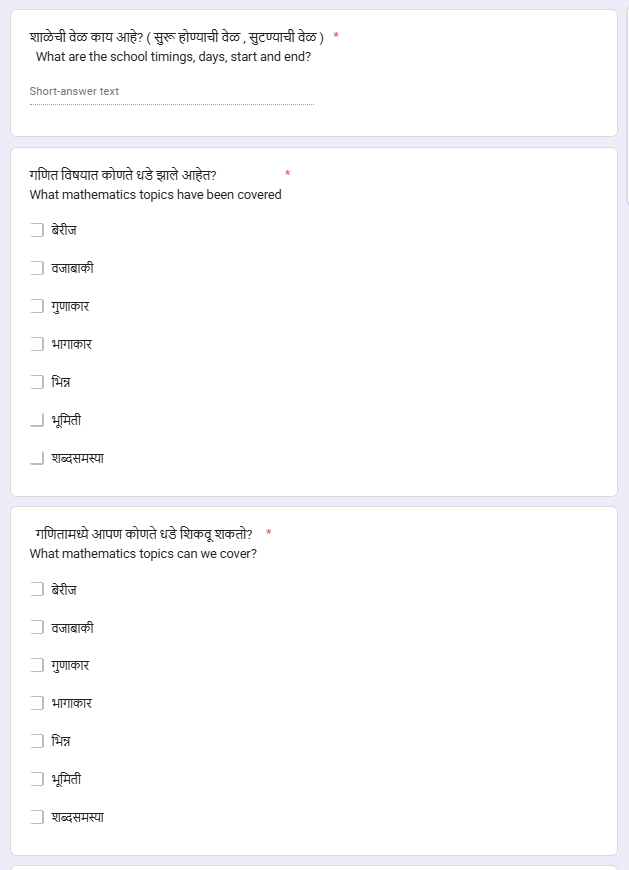
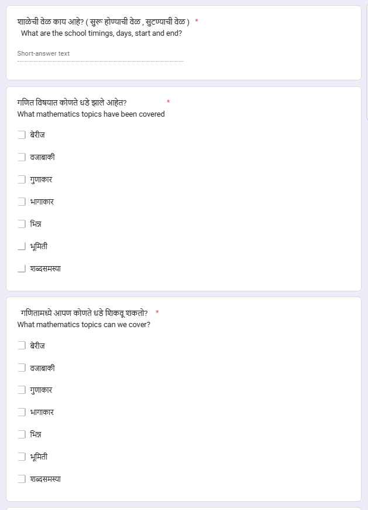
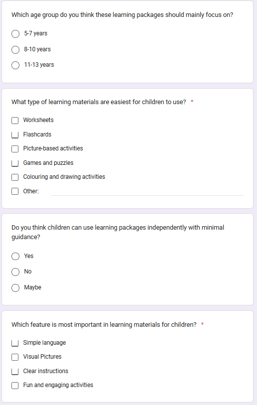
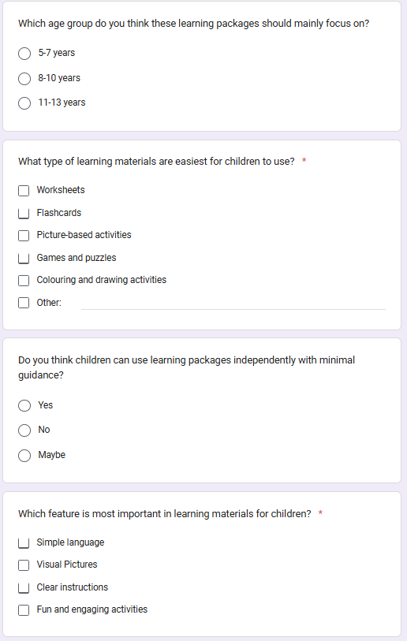

Visits
First Visit
We visited the Maher ashram’s Wagholi Office on 7th February 2026, Saturday. We first entered the main building, and had a talk with the head of organization, Ms. Sandhya, whom we had previously contacted. We explained our idea to her, and talked about how we planned to create a system to improve learning for underprivileged children. After the interaction with Ms. Sandhya, we went to a separate place where the children stayed.
For the first 10 minutes, we introduced ourselves to them about which school we come from, what our names are and why we came here. They also told us about themselves. We sat in a circle and talked for a while with the children. We saw children from different grades. Most of them were from Grades 2 and 3. However, there were a few younger children in Pre-primary. After introducing ourselves, we asked about their subject preferences, how well they performed in the subjects, and their weaknesses.
On our first visit, we provided them with some sample learning aids in order to assess their strengths and weaknesses for basic mathematics. When they were doing the worksheets, we noticed that they were able to do simple addition and subtraction with ease, though they took some time to process the problem. Apart from mathematics, we also assessed that they were good at English.
Throughout the visit, they excitedly brought us some of their school library issued story books. Though they were beginner books, the children were able to read them. However, we noticed that the children did not have much interest in reading those books. They also brought us some of their mathematics workbooks, which helped us understand what all topics they covered in their classes. We saw that they cover topics such as time, multiplication, addition and subtraction with two to three digit numbers.
This made us realize that we needed to develop more advanced worksheets and bring newer problems so that they could cope up with what they were learning in school. After staying there for some time, we decided that we had gathered enough information for the new learning aids that we would make. We also took into consideration what the director of the center told us about their learning, and how they needed something to help them improve and catch up to their peers in class.
This first visit helped us deeply understand the children’s learning level, their curriculum, and their interest patterns. It gave us the foundation to redesign our worksheets to better match their academic needs and improve their engagement.
Second Visit
We went back to Maher Ashram for our second visit on 14th February 2026. This time, we were better prepared to help the children learn, especially in Maths and English. While we took a week’s gap before coming again, we reflected upon what we had identified and learnt about from our first visit. After this, we redesigned our aids and developed a new, more suitable system. What we did was catering our aids to the needs of the Indus students. Since they are more advanced, they require similar kinds of tools in order to make their learning easier. For this reason, we created newer worksheets instead of the simpler, more basic hand-made ones we prepared earlier.
The mathematics worksheets consisted of several problems related to addition, subtraction, multiplication and division. We also included time and word problems. This is one of the sample worksheets that we created for mathematics. For English, we made worksheets related to tenses, punctuation, reading comprehension and some other basic grammar questions. These worksheets helped us make both insights as well as observations about their English performance outside of school.
We encouraged the children to attempt the worksheets, from which we further discovered their strengths and weaknesses. From these worksheets, we identified that though the children are good at the subjects, they have limited interest in solving the worksheets or doing their homework. We also observed the worksheets that the students have received from their school. We saw that they are mostly advanced for their grade level, and linked it back to the reason why they required help to cope with their curriculum.
Throughout the visit, we helped the children solve the worksheets, and after helping the younger children, we understood that they could read letter by letter, but not full words. In order to further peak their interest, we gave the children some simple gifts that they thoroughly enjoyed. We gave them some soft toys in the form of different animals that were colorful, and for the girls, we also added some cute notebooks for them to solve problems and enjoy with.
We also engaged in some group discussions with the children. This helped us interact with them together. However, we were not able to keep them engaged for too long because they kept getting distracted with their toys and caused a lot of chaos. Another challenge that we faced was getting them to solve the worksheets. Whenever we told them to try, they kept talking about their dislike for the subject, and how they were unwilling to do mathematics and English.
Towards the end of the visit, we were finally able to get them to settle down and we made them solve the worksheets. When we left, we recalled what we had done for both these visits, and decided to make more worksheets and make them into a workbook.
Third Visit

 

 
